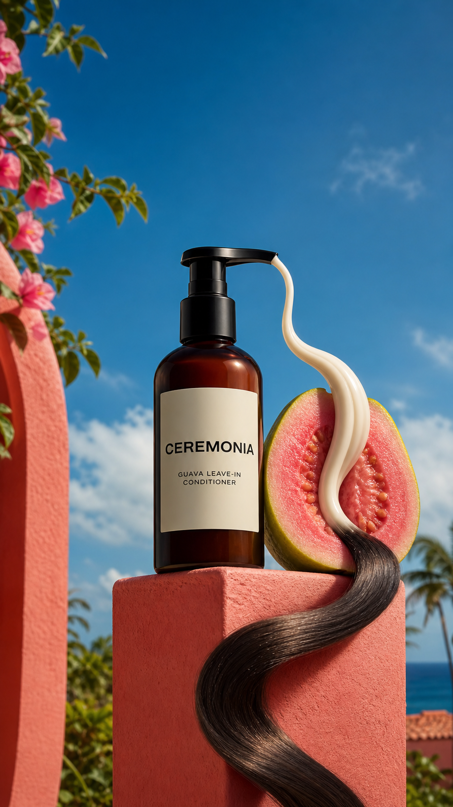

Concept created by LoomixUnsolicited concept
CeremoniaReels + TikTok9:168 seconds
Guava Leave-In — Fruit to Flow
The hero ingredient becomes the transition: a cream ribbon moves through a vivid guava half and emerges as one glossy hair-like curve, connecting ingredient, texture, and outcome in a single motion.
Create the full adOpen product pageAI-generated visual direction

Concept art for discussion only. Product and brand belong to Ceremonia.
Hooks
From guava cream to glossy flow.A fruit-powered curve.Turn the ritual tropical.
Six-shot storyboard
- Open macro on pink guava flesh.
- Dispense one pale cream ribbon.
- Guide the ribbon through the fruit center.
- Shift the texture into a glossy dark strand.
- Sweep the strand around the amber bottle.
- End on product, hook, and CTA.
Caption
A sunlit ingredient story that moves from guava to hair ritual in one curve.
LoomixLoomix turns one product photo into a storyboard, short video, captions, and ready-to-post ad copy.